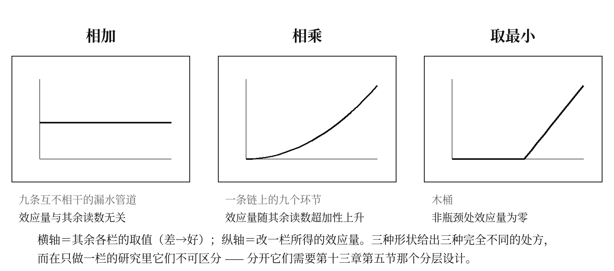
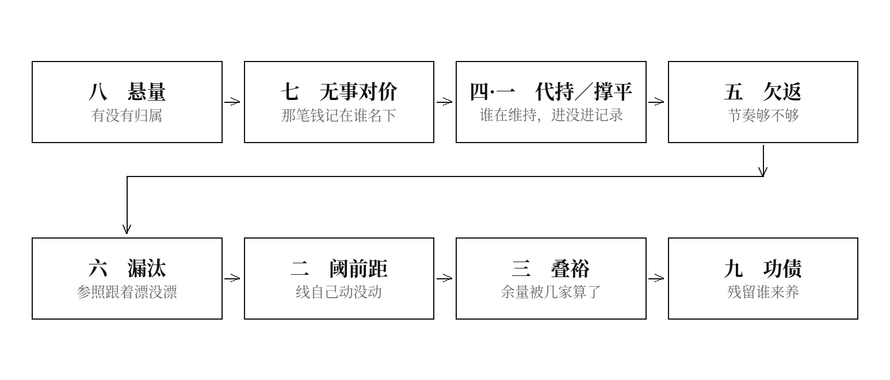

九栏合成关系的一项待检验假说——论九栏俱空的那份档案，风险是九次相加还是九倍，以及这个问题怎样才能被判定
提要
九章各自说明了一栏的缺失会导致什么。九栏同时缺失时会导致什么，没有任何一章回答过。本章把这个问题提出来，给出三种可能的合成关系——相加、相乘、取最小——并论证九栏在因果次序上排成一条链，因而本书主张的形状是相乘。本章同时写明：这个形状本书一次也没有实测过，因此它的地位与第十一章第四节相同，是一份预注册而不是一项结论。第五节给出把三种形状分开的判据，它不需要新采集，只需要在已有的干预研究上做一次重新分层。第六节交出本章最不利的一条：相乘模型对本书自己是危险的，因为它使本书的任何单条建议都不可能单独见效。
一、一个九章都没有回答的问题
第十二章第三节那份档案，九栏中八栏为无。
现在问：这份档案的处境，与另一份只有一栏为无的档案相比，差多少？是差八倍，还是差八分之八——即八个各自独立的小损失相加？
这不是一个学术问题。它决定了一件很实际的事：如果你只能改一栏，改哪一栏，以及改了之后能指望多少。 相加意味着改任何一栏都有一份确定的收益，改哪一栏取决于哪一栏最便宜；相乘意味着在其余各栏极端不利时，改任何一栏都近乎无效，而必须先找出那个接近零的因子。
九章没有一章能回答，因为每一章只处理一栏。
二、三种可能的形状
设九个读数各自被转换为一个介于零与一之间的“通过率” $p_i$——即那一环节没有出问题的比例。三种合成：
相加。 总损失 $L=\sum_i w_i(1-p_i)$。九栏是九条互不相干的漏水管道，各漏各的，堵住一条就少漏一份。预测：单点干预的效应量与其余读数的取值无关。
相乘。 总通过率是各环节通过率之积。九栏是一条链上的九个环节，任何一环接近零，全链接近零。预测：单点干预的效应量随其余读数的取值剧烈变化，且交互是超加性的——在其余各栏都好的场所改一栏，效果大；在其余各栏都差的场所改同一栏，效果近于无。
这里必须立刻堵住一处不严谨。 上面把九个读数直接当作“通过率”相乘，是一个方便的写法，而九个原始读数并不是同一种概率：其中五个是双向量（他持率、叠计比、欠返率、落点自证率、续养率，见附录一），叠计比甚至可以大于一，各自的分母也不同类。因此正式的写法应当是两步：第一步，为每个读数定义一个情境转换——通过率 pᵢ 由该栏读数 rᵢ 与它的第二字段和情境条件 cᵢ 共同决定，而不由 rᵢ 单独决定（这正是“高他持率可能是必要支持”“高续养率在安全关键系统里是正确代价”这两句话的形式表达）；第二步，链的合成应当写成条件通过率之积——第 i 环在前 i−1 环均已通过的条件下通过的概率之积，而不是无条件概率之积，因为环节之间未必独立。
在这两步完成之前，本章的乘积式只是一个模型候选，不是一个已定义的模型。 本章副题因此写作“一项待检验假说”。
取最小。 $P=\min_i p_i$。木桶。预测：改善非瓶颈的那一栏，效应量为零，不是小，是零。
三种形状给出三种完全不同的实践处方，而它们在单栏研究中不可区分——只做一栏的研究，三种形状都能解释它的结果。

三、九栏排成一条链
本书主张的形状是相乘。理由不是实测，是九栏在因果次序上的位置：它们不是九件并列的事，是同一个过程的九个先后环节。
把九栏按次序排开：
- 悬量（第八章）：这份阈下的风险，附着在什么东西上？——若无归属，后面全部无从谈起。这是入口。
- 无事对价（第七章）：既然没有落点，那笔为“没有发生”支付的钱记在谁名下？——不记，则动作不可持续。
- 代持的病 · 撑平（第四、一章）：动作若仍在发生，是谁在做，进没进记录？
- 欠返（第五章）：这些动作之间的间隔，够不够它自己走完一趟返程？
- 漏汰（第六章）：判断“它现在够不够格”所用的参照，跟着它一起动了没有？
- 阈前距（第二章）：判断“它算不算病”所用的那条线，自己动了没有？
- 叠裕（第三章）：这次判定所依据的余量，还有几家在同时算作自己的？
- 功债（第九章）：如果这一次成功了，它留下的残留由谁供养、什么时候撤？——出口。
八个位置，九栏（第一与第四章同处第三位，一个数外部承担、一个数记录缺失）。
链的形状可以用一句话说完：一份没有归属的风险，找不到落点；找到了落点，那笔支出没有科目；有人仍在支出，而支出不进记录；进了记录，节奏也未必够；节奏够了，判定所用的参照可能跟着一起漂；参照不漂，那条线自己在移；线不移，所依据的余量已被别处算了三遍；这些全都过关了，成功留下的残留还得有人一直养着。
这是一条链，不是一堆。链上任何一环断掉，后面的环节做得再好也没有输入——这正是相乘的形状。
必须立刻写下一条限制：以上是位置论证，不是机制论证。九栏在一个过程的先后位置上排得开，不等于它们的数值关系就是乘积。位置相邻的两个环节，其读数完全可以在统计上独立。本章据以主张相乘的，只有次序，没有数据。

四、相乘模型能解释而相加模型解释不了的一件事
有一个现象在预防医学、教育干预、组织变革三个领域里同时存在，而且各自都被当作本领域的特殊困难：小规模试点有效，大规模推广失效。
相加模型对此没有解释——若九条通道各漏各的，堵住一条的收益不应随规模变化。通行的解释是“实施保真度下降”，即推广时动作做得不标准了。
相乘模型给出另一个解释，而且它是可判定的：试点场所通常在其余各栏上都处于有利取值（自愿参加、人手宽裕、有外部观察者在场、判定线在试点期内被冻结、措施台账短），因此改动一栏的效果被其余高值放大；推广场所的其余各栏取值低，同一个改动被乘进一串小数里。
两种解释可以分开，判据是：测量实施保真度并加以控制。 若控制保真度之后，效应量仍随其余读数的取值系统变化，则保真度解释不足，链式模型得到支持；若控制保真度之后效应差异消失，则本章的模型是多余的。
这条判据不需要新采集——多数干预研究已经记录了保真度。它需要的是把第十一章那九个读数中的至少三个，在已有研究的场所描述里编码出来。第十一章第三节乙档的成本。
五、把三种形状分开
三种形状的判据不必等九个读数全部采齐，用三个就够了。
设计。 取一批同类场所，测其中三个读数（建议取采集成本最低的三个：代持率、续养率、入账迟滞率），按取值分为高、中、低三层。在每一层中对同一栏施加同一个改动，测同一个结果变量。
读法。
- 若三层的效应量大致相等 → 相加。九栏各自独立，应各自单独治理，本书的第十至十四章全部多余，九章应作为九篇独立论文流通。
- 若效应量随其余读数取值单调上升，且上升是超加性的 → 相乘。链式模型得到支持。
- 若在非瓶颈层效应量为零而非小 → 取最小。木桶模型胜出，本书的处方应改为“只治最差的那一栏，其余不必动”。
三种结果对本书的意义完全不同，而其中第一种会否定本书的第四编。把这一条写在这里，是因为一份只列出“支持我”的结果清单的检验设计不是检验设计。
识别方法必须比“看三层效应量”更严。 只比较高、中、低三层的效应量，不足以严格识别函数形式。正式做法应当是：结果变量事先确定；同时拟合四个模型——可加模型、含交互项的模型、乘积模型、瓶颈（取最小）模型；用样本外预测误差或信息准则比较，而不是看图形直观；报告不确定区间而不是点估计；并预先写明模型选择准则，防止事后挑一个最合意的。此外，每个读数都应做敏感性分析：周期如何划分、一次动作如何计数、缺失如何处理、跨系统记录是否计入、阈值改变时结论是否稳定、以次数或时长或成本为权重时结果是否改变。
一条附加的分离：相乘与取最小容易混淆，因为在读数分布偏斜时乘积也近似取最小。分开它们的是非瓶颈层的效应量是否为零：乘积模型下它是小的正数，木桶模型下它是零。要区分这两者需要足够的统计功效，而这正是这个设计最贵的一处。本书对此没有省钱的办法。
六、相乘模型对本书自己是不利的
若链式模型成立，本书的处境会变得难堪，理由如下。
其一，本书的任何单条建议都不可能单独见效。 一个机构读了本书，决定先在病历里加一栏“本次判定所依据的标准版本”——这是九栏里最便宜的一栏。若链是乘积，而该机构在悬量、无事对价、代持三个上游环节上取值都低，那么这一栏加了也不会改变任何结果。该机构会得出结论：本书说的东西没有用。 而按本书自己的模型，这个结论是错的，可这个错误从数据上看不出来。
其二，本书因此获得了一个万能的退路。 任何一次失败的应用都可以被解释成“上游还有一环没通”。这是一条不可证伪的辩解，而九章各自的证伪清单都禁止这类辩解。本章必须把这条退路自己堵上，堵法是第五节那个分层设计：如果效应量在三层之间没有系统差异，链式模型就是错的，不许再用“上游没通”解释。
其三，它对处方的要求高得不现实。 相乘意味着值得做的干预必须同时动几栏，而同时动几栏在真实机构里意味着跨科室、跨条线、跨信息系统。本书说不出这件事该由谁来牵头，因为按第三章的主张，凡是跨出单位的东西都没有归属——本书自己的处方落在自己所指认的那个缺栏里。
这一处不是修辞上的巧合，它是本书全部主张的一个直接后果，也是本书至今没有解决的困难。
七、这一章自己落在哪一格
本章提出的是一个模型，不是一项发现。它的全部依据是九栏在因果次序上排得成一条链，而次序不蕴含数值关系。
按第十一章第六节的记法：本章把“位置相邻即环节相接”这一份论据整份计入了自己的地基，而这份论据没有任何一次实测支持。 若第五节那个分层检验做出来是“三层效应量相等”，本章连同第四编的整体主张一起失效——不是逐条失效，是一次性失效。
在那个检验完成之前，本章的地位是一份预注册。
第五节那个设计需要多少钱，写在附录三里。它比本书任何一章的正面预测都便宜，而本书没有做。这是本书欠下的第三笔账。